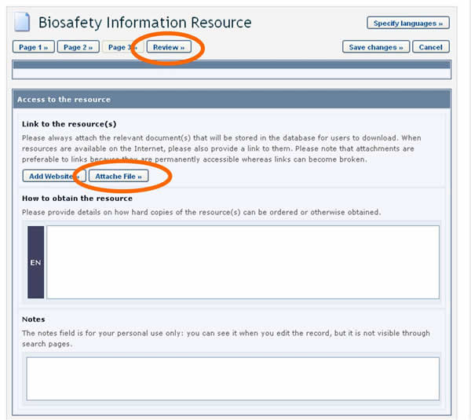

El botón Review, ubicado en las partes superior e inferior de los Formatos Comunes, permite a los usuarios del CIISB revisar la información tal cual aparecerá en el registro cuando se publique.

Haciendo clic en el botón Review se abre la página de revisión. Si hay errores en los campos, estos se mostrarán con una descripción del error para cada uno de ellos. Los campos obligatorios no completados también son destacados.
Al hacer clic en el botón Edit, retorna al campo que necesita ser modificado. Si no puede completar el formulario en ese momento, se recomienda guardarlo como borrador.
Es muy importante revisar el registro para asegurarse que esté completo y sea certero antes de su envío para publicación.

El botón Save Changes, en las partes superior e inferior de los Formatos Comunes en línea le permite a) Envíar el registro para publicación o b) Guardarlo como borrador. Si decide la última, un borrador estará disponible en la sección Edit a draft record para ser accedido posteriormente.

El botón Cancel, en las partes superior e inferior de los Formatos Comunes permite cancelar los cambios realizados.